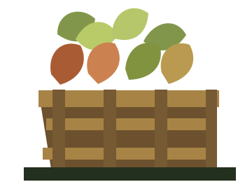
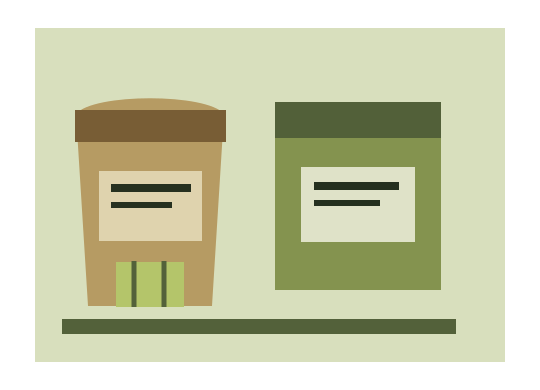
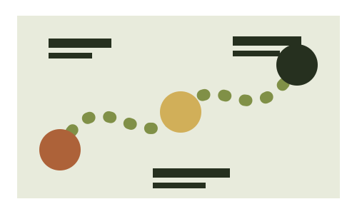

Hangi ürünler sunuluyor?
Örnek ürün adlarını gerçek ürün listeniz, kalite sınıfı ve mevcut dönem bilgisiyle değiştirin.

ürünüÜrün dönemi, ambalaj seçeneği ve toptan talep aynı yerde.
Talep oluşturÖrnek tema. Ürün ve dönem bilgileri temsili içeriktir.
Alıcı önce ürünün ne zaman ve hangi biçimde sunulduğunu görür. Kayıtları işletmenin güncel dönemine göre değiştirin.
Ambalaj türünü ve talep edilen miktarı birlikte belirtin. Aşağıdaki seçenekler yalnızca örnek tema içeriğidir; ölçü ve uygunluk üretici tarafından doğrulanmalıdır.


Ürün ve dönem kaydı alıcının ne aradığını netleştirir.
Tercih edilen ambalajı ve yaklaşık miktarı talebe ekleyin.
İl ve iletişim bilgisiyle üreticiye iletilecek talep metnini hazırlayın.
Bilgileri doldurun; örnek sayfa talep taslağını cihazınızda oluşturur. Herhangi bir yere gönderilmez veya kaydedilmez.
Bu demo formu göndermez. Taslağı seçip kopyalayın ve kendi iletişim kanalınızdan iletin.
Örnek ürün adlarını gerçek ürün listeniz, kalite sınıfı ve mevcut dönem bilgisiyle değiştirin.
Örnek ambalaj ölçülerini gerçek gramaj, malzeme ve palet düzeniyle doğrulayın.
Bu tema taslak metin üretir. Yayında işletmenin gerçek telefon, e-posta veya sipariş bağlantısı eklenmelidir.